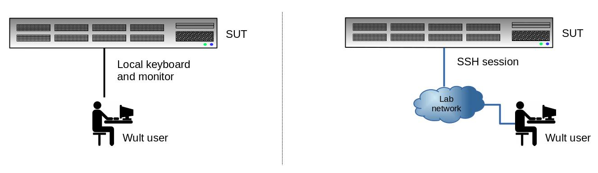
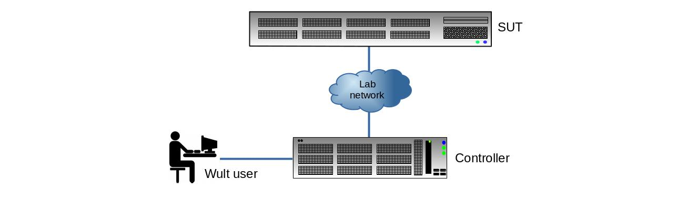

User Guide
Table of Contents
1 Usage models
There are 2 wult usage models - local and remote. Most users prefer the local usage model, because it is more straight-forward.
In both usage models wult command line arguments are the same except for the -H SUTNAME option, that you should add in the remote usage case. This option specifies the SUT host name wult should connect to.
1.1 Local usage model
In the local usage model, the user runs wult on the SUT. Wult measures the SUT and stores the measurement results on the SUT.
2.2 Remote usage model
In case of remote usage model, the user runs wult on the controller. Wult connects to the SUT over the network, exercises the SUT, and stores the results on the controller.
In the remote usage model a single controller may exercise many SUTs at the same time (multiple instances of wult running simultaneously). The other advantage of this usage model is that you run wult as a non-privileged user on the controller. However, you should have root SSH login configured on the SUT (here is how to do this).
2. Scan for supported devices
Start with scanning for supported delayed interrupt source devices. Run the following command on the SUT using the the local usage model:
sudo wult scan Compatible device(s): * Device ID: tdt - Alias: tsc-deadline-timer - Description: TSC deadline timer * Device ID: hrtimer - Alias: hrt - Description: Linux High Resolution Timer * Device ID: 0000:38:00.0 - Alias: enp1s0 - Description: Intel I210 (copper). PCI address 0000:38:00.0, Vendor ID 8086, Device ID 0000:38:00.0.
The example output lists 3 devices that can be used as delayed interrupt sources for wult:
- tdt - the TCS deadline timer.
- hrtimer or hrt - the high resolution timer, this is what we recommend to use to most users.
- 0000:38:00.0 - this is the PCI address of the I210 NIC. This NIC is also available under the enp1s0 name, which is actually the Linux network interface name.
If using the nic method, this howto section has some useful information.
3. Start the measurements
Before you start wult, you should know which method you are going to use. This section may help.
The basic way to start wult is by running wult start DeviceID, and DeviceID's are provided by wult scan. If unsure, use hrt.
For example, to run wult using the hrt method, run:
wult start hrt
This command will collect 1000000 datapoints and save them in current directory in a sub-directory like wult-hrt-<date>. Here are the options you may want to use as well.
- -c - count of datapoints to collect (default is 1000000).
- --reportid - report ID of the result. Use a short, but descriptive string to describe the test run.
- -o - the output directory path.
- --cpunum - the CPU to measure the C-state latency on (default is CPU 0).
Check wult start -h for more information.
4. Generate HTML report
The wult start command measures the SUT and saves the result in the datapoints.csv file, along with some additional metadata in the info.yml file. We also refer to these results as "raw results".
One way to quickly inspect the results in the command line is by using the wult stats and wult filter commands. But you also can generate an HTML report with wult report. Here is how to generate an HTML report for the raw results in all-cstates-enabled:
wult report all-cstates-enabled
The HTML report will be saved in all-cstates-enabled/html-report sub-directory. Use -o option to specify a different path to save the HTML report in.
Note, you can generate a diff too. A diff is an HTML report for multiple raw results. Diffs make it easier to compare test results. Just give wult report multiple raw test results to generate a diff.
Please, find more 'wult report' hints here.